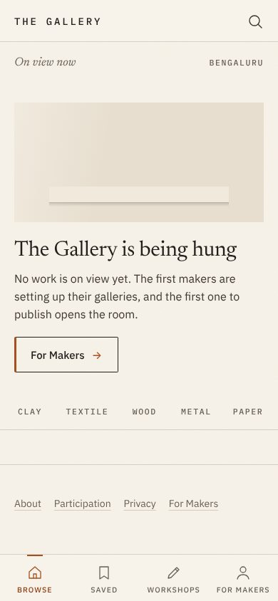
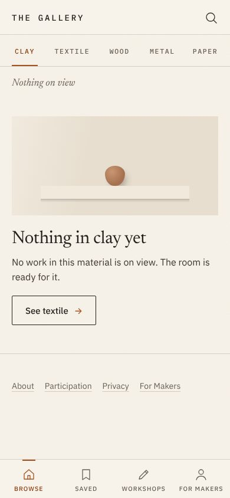
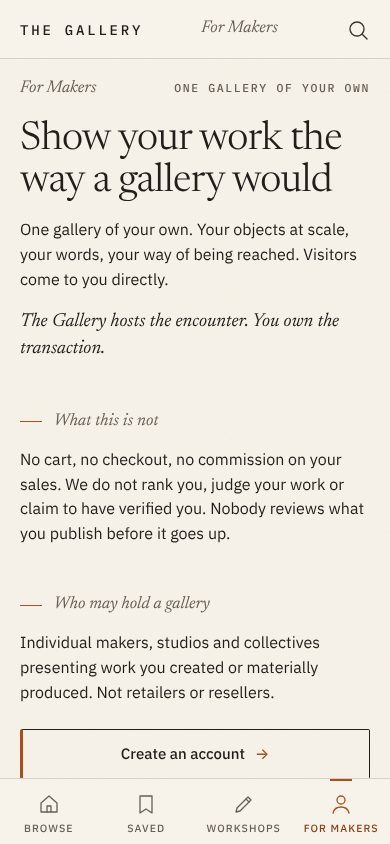
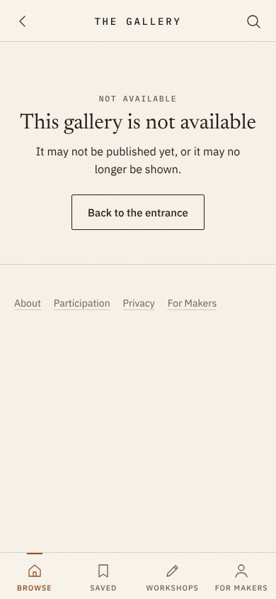
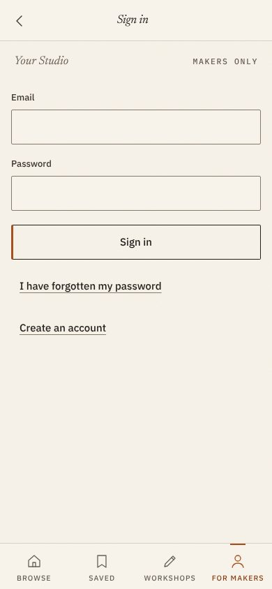
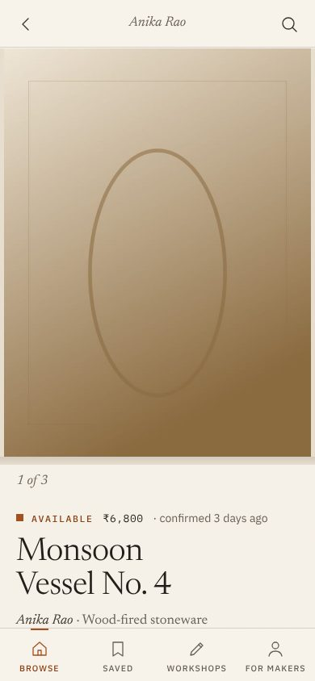
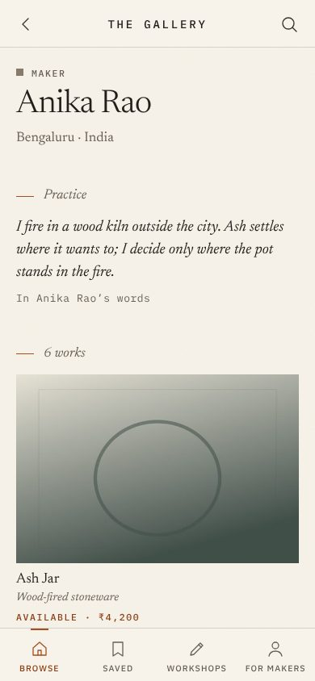
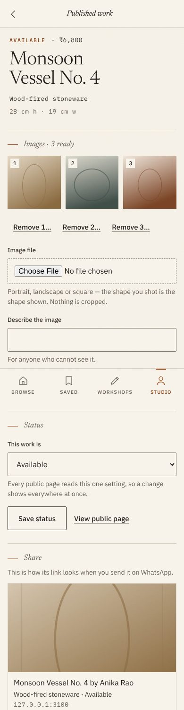
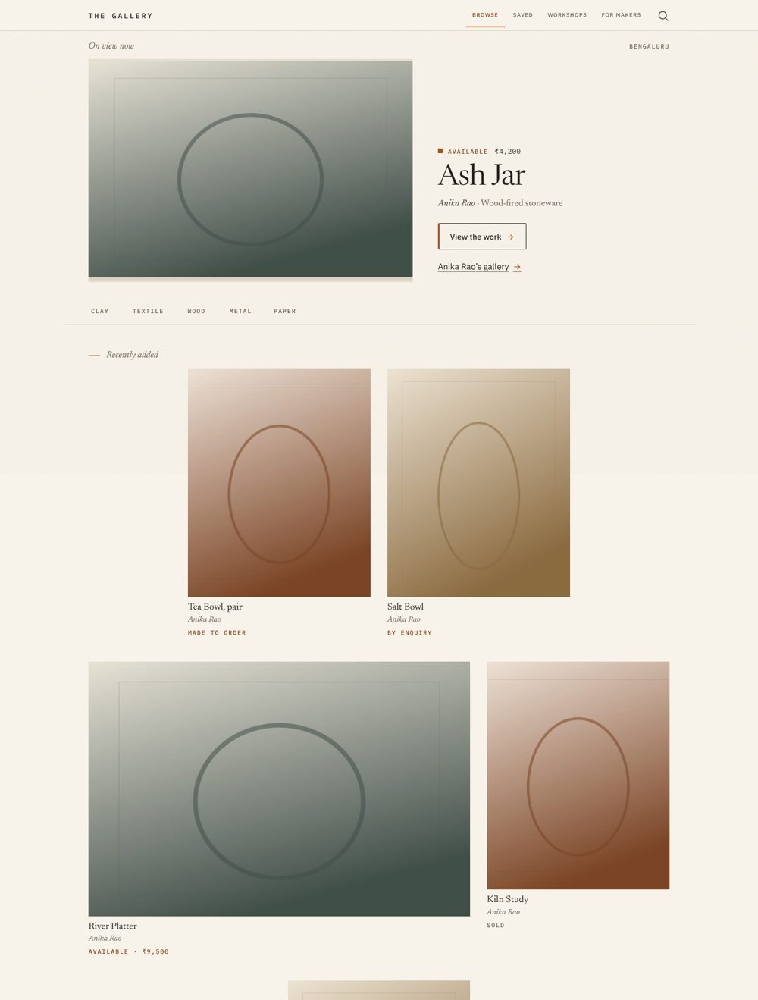
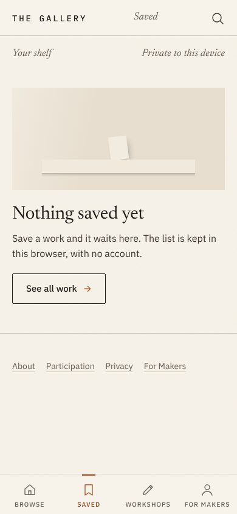

Five independent reviewers looked at all 29 pages at phone, tablet and desktop width: the live site as it is today (empty) and the same build with works on the wall. Each used a different installed design skill. They agree on the cause. The site repeats itself, its empty states loop and look broken, and the visual system leans on the defaults that make a site read as generated.
5 reviewers98 findings17 P0 (trust or first impression)9 themes below174 captures
Skills used: ux-ui-audit · vectorlab (anti-slop, empty-states, typography, spacing, page-patterns, labels, viewports) · design-critique, design-elevation, frontend-design · ui-consistency (finding-patterns, verifying) · ux-writing, ux-copy, journey-mapping. IDs: U = audit, V = vectorlab, AD = art direction, C = consistency, W = writing.
1. The empty site looks broken and goes in circles
P0
This is what every visitor sees today.
P0“On view now · Bengaluru” sits directly above “No work is on view yet”. W-01 V02 AD-01
P0The same beige box-and-shelf picture is the hero of six pages. It reads as an image that failed to load. U02 V01 AD-02
P0Every empty page’s one button leads to another empty page: clay → textile → clay, Saved → empty entrance, Search → empty clay. The browse code meant to pick “a material with work” picks any other material. U01 V03 W-03 W-04
P0The entrance offers five material doors to five empty rooms, and its only button is for makers, not the visitor who came from WhatsApp. AD-03 W-02
P1Two hairlines with an empty band between them under the rail. U06 V04 C-15
Fix (no system change)
Empty states become type only: one line naming what is empty, one sentence, one action that leads somewhere real. No picture of a pretend object.
The empty entrance is an honest launch page: “The Gallery” set large, “Opening in Bengaluru. The first makers are hanging their work.”, and one link for makers. No context line, no rail.
Materials with no works are not offered. The loop bug is fixed.


Live today, 390 px: entrance and Clay. The same placeholder, and a button into another empty room.
2. Everything is said two to five times
P0
P0“For Makers” appears 3 times on the entrance and 4 times on the For Makers page: header title, label, active tab, footer. C-01 V05 U04 W-05
P0Every phone page has three navigations: header, icon tab bar and a footer link row that repeats the tab bar. C-02 AD-08
P1The maker’s name appears 5 times on one work page. AD-06 C-04
P1Labels repeat the heading under them: “NOT AVAILABLE / This gallery is not available”, “Nothing on view / Nothing in clay yet / No work in this material is on view”, “ONE GALLERY OF YOUR OWN / One gallery of your own.” V06 V07 V08 W-18 W-21 C-05
P1The same paragraphs are copied across About, For Makers and Participation (“hosts the encounter… owns the transaction”, “Who may hold a gallery”). U05 W-13 W-14
P1Studio headers repeat the page heading: “Account / Account”, “Your details / Your details”. C-09
Fix
A written rule, “say each name and each fact once per screen”, added to the interface foundation and checked by a journey that counts repeats. Most of these lines are deleted, not rewritten.


For Makers names itself four times. “Not available” is said twice, 8 px apart.
3. One page, five templates
P0
P0The header has five shapes. The wordmark is missing on 13 of 29 pages, including the work page, the one most shared on WhatsApp. C-03 U18
P1The header title sits about 40 px off centre. U08
P1Sign-up switches from the public template to the Studio template halfway: header, footer and margins all change. Forms have three different left edges. C-08 V13
P1Three empty-state components, three looks for the same “Back to the entrance”, five different gaps above the first heading, and 82 inline styles in 26 files. C-06 C-07 C-13 C-14
P1The work’s status-title-maker block is built three ways (entrance, work page, Studio). C-12
Fix
One page template, one header with the wordmark always present, one empty-state component, one wall-label component, no inline styles (a check refuses new ones).

Sign in: no heading, “Your Studio · MAKERS ONLY” stacked labels, three left edges.
4. The work page hides the one thing it is for
P0
P0On a phone, “Contact Anika” starts below the first screen. The foundation’s 60 vh image rule causes it. U03 AD-07
P1The image sits in a thin beige matte that looks misaligned, and “1 of 3” does not show that the images swipe. AD-07 U19
P1The status line mixes five type styles, and “confirmed 3 days ago” reads to a visitor like an order confirmation or a verification badge. U10 W-11
P2In the contact sheet, WhatsApp is the fourth thing down, after a radio list and a legal-sounding paragraph. AD-14 W-12
Fix
Contact visible on the first screen of every work. The image goes full width with no matte, plus a progress line that shows the swipe. One status line in one voice; the freshness signal is kept but reworded. WhatsApp comes first in the sheet.

Work page, 390 × 844: the Contact button is below this screen.
5. It speaks in policy, not to a potter
P1
P1For Makers reads as terms of service: “materially produced”, “own the transaction”, “claim to have verified you”. W-06 AD-12
P1“Studio” is used before it is explained (“Your email opens the Studio”). Sign in has no heading. Reset says “Set a new password” above “Send yourself a link”. W-07 U15 U16 U22 W-16 W-17
P1Developer language in the Studio: “full international form”, “https:// address”, “Every page reads this one setting”. W-10 W-24
P1About is mostly negations. Privacy greets a visitor with makers’ account email. W-15 W-20
Fix
A one-page voice sheet: allowed words, banned words, “say it once”. Then every screen is rewritten against it. The writing review supplies exact replacement copy for each line.

A maker’s gallery opens on five labels before the first object.
6. The Studio looks unfinished
P1
P1Image upload is the browser’s grey “Choose File / No file chosen”. U11 V14
P1“Remove 1…” labels are cut off; status chips are four different widths; mono sentences wrap over three lines (“clay · confirmed 5 / days ago”). U12 U13 V12 C-11 W-08
P1The price “On enquiry” and the status “By enquiry” are the same idea in two controls. This is a product decision, listed below. W-09
Fix
A designed image picker (tap a large tile to add a photo). Full labels (“Remove image 1”). Status shown as text with one change control. Sentences in sans, never mono.

Studio work page: “Remove 1…”, and the browser’s own file control.
7. Desktop is a stretched phone
P1
P0The featured work takes 33% of a 1440 screen; the empty space beside it is larger than the work. AD-04
P1Wall rows are centred, so tiles float and one sits orphaned in the middle. U07
P1Desktop navigation is set at the phone’s 10.5 px. Prose pages leave two-thirds of the screen empty. U14 V16 AD-15
Fix
The featured image is about 60% of the width and up to 80 vh, with the label beside it. A left-aligned 12-column wall with no centred orphans. Desktop navigation in readable sizes.

Entrance with works, 1440: a small work, a large void, centred orphans.
8. No app icon
P1
P1No favicon, no app icon and no manifest. Chrome shows a grey “A”, offers to install, then says “This app cannot be installed”. your screenshot · found at capture
Fix
A typographic mark (from the new wordmark) as favicon and app icon, plus a manifest, so a saved shortcut looks like The Gallery. No install push.
9. The look is the generated default
P1SYSTEM CHANGE
The art-direction and vectorlab reviews both trace the “template” feel to the accepted system itself, not to a bug:
P1Cream ground, light serif, terracotta accent, tracked mono caps on every label, an amber rule plus italic heading before every section, and “→” on every button: the catalogue of generated-site tells. AD-05
P1The wordmark “THE GALLERY” is set in the same mono label face as “SOLD” and “CLAY”, so the institution has no mark. U09 AD-09
P1Every action is the same outlined box with an amber edge, so nothing is primary: “Contact Anika” looks like “Back to the entrance”. The foundation forbids a filled button. V09 AD-13
P1Labels at 11.5 px and nav at 10.5 px (9.5 px on small phones), below the 12 px floor. Display type stops at 56 px on desktop. V10 V11 AD-16
Direction from the art-direction review
One full-width image, one large name, one WhatsApp action, nothing said twice, and type in place of a fake image when a page is empty. References named: David Zwirner, Hauser & Wirth, Experimenter (Kolkata), Chemould Prescott Road, The New Craftsmen. Study their discipline, not their layouts.

Mono labels, the shared placeholder, an outlined amber-edged button with “→”.
For the governor
Three decisions before building
Themes 1–8 need no system change and are built in any case. These three set how far Wave 5 goes.
A. How far to change the visual system (theme 9)
Option 1
Keep the system
Fix themes 1–8 only. Cleaner and honest, but the generated look stays.
Recommended
Targeted system change
A serif wordmark. One filled primary action per screen (WhatsApp on a work). No “→” on buttons. Mono only for dimensions and price. No rule-plus-italic opener on every section. A 12 px type floor. Display up to about 104 px on desktop. Palette unchanged.
Option 3
Full recomposition
Option 2 plus a new accent colour (indigo from the textile token) and a full re-plating of the reference set. Largest change; the most new risk.
B. Navigation on public pages (theme 2)
Option 1
Keep the tab bar
Remove the footer row that repeats it. The smallest change; the site still reads as an app.
Recommended
Gallery header, Studio keeps its bar
Public pages: wordmark, Search, Menu. The menu holds Browse, Saved, Workshops, For Makers and the colophon. The tab bar stays in the Studio, where it is a tool. One colophon line at the foot of each page.
Option 3
Header only, everywhere
No bar in the Studio either. Simpler, but the Studio loses quick switching on a phone.
C. Price “On enquiry” beside status “By enquiry” (W-09)
Recommended
Later, its own change
It changes what makers choose, not how the site looks. Settle it after Wave 5 with its own proof.
Option 2
Fold into Wave 5
Rename or merge now. Wave 5 gets larger and mixes a product rule with visual work.
Option 3
Leave as is
The overlap stays and makers keep meeting two words for one idea.
How Wave 5 is built and proved
A short design pass first: the empty entrance, a work page, a maker’s gallery and For Makers, rendered at 390 and 1440 for you to see before the rest is built.
Then every page, against one template, one header and the voice sheet.
Proof as before: the full suite on phone and desktop, new journeys that fail if a repeat, a dead-end empty state or a hidden Contact comes back, axe and reflow, an independent review, and before/after renders of the live empty state.
Merge only on your word; then I confirm on the live site.
Not checked: the new maker’s first Studio screen was not captured (W-25), and the bottom bar drawn mid-page in the full-page captures is a capture artefact (V17). Neither changes the ranking. The full findings tables (98 rows with exact copy and CSS values) are kept with the session and go into the Wave 5 receipt.